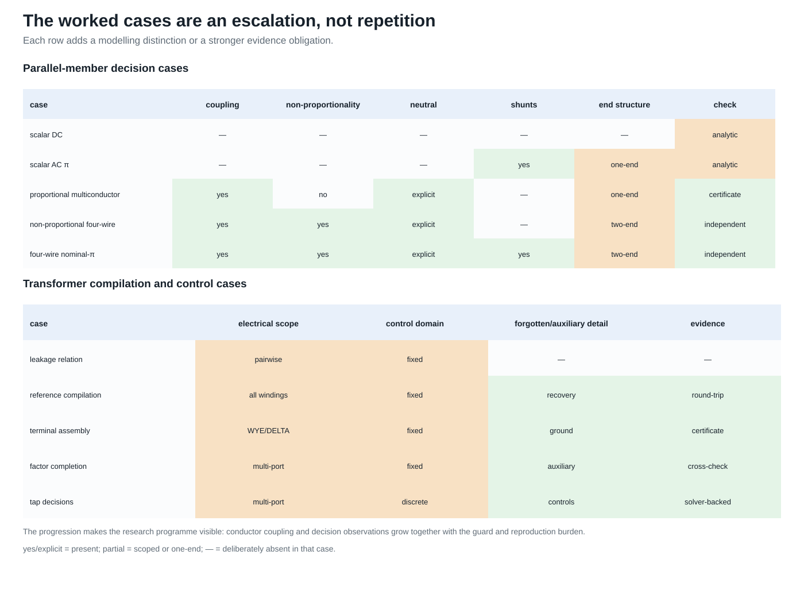
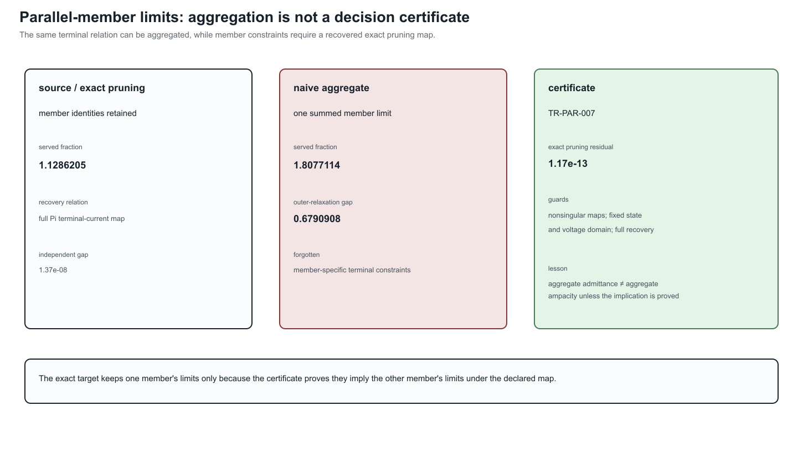
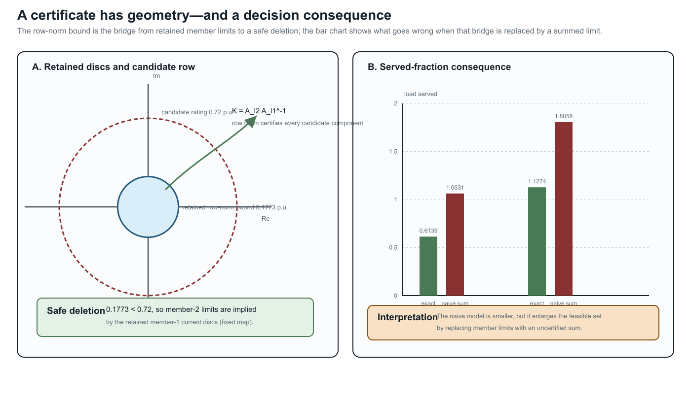

Multiconductor parallel AC decision case
Page status: guarded multiconductor decision case with executable redundancy certificates; general state-dependent classification remains open.
This is the multiconductor specialization of the canonical parallel-member failure in the first scalar counterexample. That chapter owns the general warning: an aggregate terminal relation does not automatically preserve member-constrained decisions. The present chapter adds coupling, complex voltages, and AC power balance without restating that warning as a separate modelling claim.
The scalar parallel example shows the feasible-set mechanism with almost no algebra. This case retains complex conductor voltages, mutual impedance, phase-to-neutral power, voltage bounds, and nonlinear AC power balance. Its purpose is to test whether the same representation failure changes an AC decision optimum.

The grid explains why the later cases are not repetitions of the scalar example. Coupling, explicit neutrals, end shunts, two-end observations, and control decisions are added deliberately; the evidence obligation grows with the model rather than being hidden behind a larger diagram.


Source model
Two buses $i$ and $j$ have ordered conductor set $(a,n)$. The sending voltage is fixed at
\[\mathbf U_i=(1,0)^{\mathsf T}\ \mathrm{p.u.}\]
and two parallel members satisfy
\[\mathbf I_{\ell i j} =\mathbf Y_\ell(\mathbf U_i-\mathbf U_j), \qquad \ell\in\{1,2\}.\]
The full, coupled series impedances are
\[\mathbf Z_{\ell_1}= \begin{bmatrix} 0.04+0.08\mathrm j&0.01+0.02\mathrm j\\ 0.01+0.02\mathrm j&0.04+0.08\mathrm j \end{bmatrix}, \qquad \mathbf Z_{\ell_2}=10\mathbf Z_{\ell_1}.\]
Every member and conductor has limit $|I_{\ell i j,c}|\le0.6$ p.u. Receiving-end conservation requires
\[\sum_{\ell}I_{\ell i j,a} +\sum_{\ell}I_{\ell i j,n}=0.\]
The decision $\alpha\ge0$ scales a constant-power direction across phase and neutral:
\[S_j=\alpha(1+0.2\mathrm j) =(U_{j,a}-U_{j,n}) \left(\sum_\ell I_{\ell i j,a}\right)^{\!*}.\]
The phase-to-neutral voltage magnitude is restricted to $[0.70,1.05]$ p.u., and the objective maximizes $\alpha$.
Four formulations
The source formulation retains each $\mathbf I_{\ell i j}$ as a variable and enforces every member limit. The naive aggregate uses
\[\mathbf Y_{\mathrm{eq}}=\mathbf Y_{\ell_1}+\mathbf Y_{\ell_2}\]
and assigns each aggregate conductor the summed limit $1.2$ p.u. The exact lifted aggregate uses the same aggregate terminal relation but recovers
\[\mathbf I_{\ell i j} =\mathbf Y_\ell(\mathbf U_i-\mathbf U_j)\]
inside the target model and applies the original $0.6$ p.u. limits.
The exact pruned aggregate first observes that $\mathbf Z_{\ell_2}=10\mathbf Z_{\ell_1}$, and hence
\[\mathbf Y_{\ell_2}=0.1\mathbf Y_{\ell_1},\qquad \mathbf I_{\ell_2 i j}=0.1\mathbf I_{\ell_1 i j}.\]
Because the members have equal componentwise limits, every $\ell_2$ current circle is implied by the corresponding $\ell_1$ circle. The formulation therefore keeps both recovery maps but enforces only the certified nonredundant $\ell_1$ limits. This is the multiconductor proportional special case of the constraint-pruning idea; it does not assume that the general scalar quadratic test in [3] automatically extends to arbitrary matrix-valued conductor models.
General linear-current containment test
The proportional proof is now implemented as a special case of a reusable linear-current certificate. Let $A_r$ map the stacked complex endpoint voltages to a retained current group, and let $A_c$ define a candidate constraint. For any complex matrix $A$, define its realification
\[\mathcal R(A)= \begin{bmatrix} \Re(A)&-\Im(A)\\ \Im(A)& \Re(A) \end{bmatrix}\]
and the normalized quadratic form
\[Q(A,I^{\max})= \frac{\mathcal R(A)^{\mathsf T}\mathcal R(A)}{(I^{\max})^2}.\]
The retained constraint implies the candidate constraint exactly when
\[Q(A_r,I_r^{\max})-Q(A_c,I_c^{\max})\succeq0.\]
To see this, write the constraints as $x^{\mathsf T}Q_rx\le1$ and $x^{\mathsf T}Q_cx\le1$. Positive-semidefinite dominance gives the forward implication immediately. Conversely, homogeneity lets any $x$ with $x^{\mathsf T}Q_rx>0$ be scaled to the retained boundary; directions in the nullspace can be scaled without bound and therefore must also lie in the candidate nullspace. Thus implication requires $x^{\mathsf T}Q_cx\le x^{\mathsf T}Q_rx$ for every $x$. The argument includes singular cylinders, not only bounded ellipsoids.
For componentwise multiconductor limits, the implementation applies this test to every aligned conductor at both terminal ends. A non-proportional test uses different row factors, $0.2$ and $0.4$, so the member admittance matrices are not scalar multiples even though every candidate current circle is certifiably implied. A second test is safe at $ij$ and unsafe at $ji$ and is correctly rejected. This establishes claim TR-PAR-005.
The test is necessary and sufficient for each individual centered Euclidean norm implication. The current member-level algorithm is only a pairwise certificate: it does not yet detect a constraint implied jointly by several other limits, nor does it cover affine offsets, non-Euclidean thermal regions, or decision-dependent line, tap, outage, and switching states.
Results
| Formulation | Served fraction | Receiving voltage magnitude | Largest recovered member current | Variables / constraints |
|---|---|---|---|---|
| source members | 0.6138908 | 0.9485579 | 0.6000000 | 13 / 19 |
| naive aggregate | 1.0630833 | 0.9034471 | 1.0909091 | 5 / 9 |
| exact lifted | 0.6138908 | 0.9485579 | 0.6000000 | 5 / 11 |
| exact pruned | 0.6138908 | 0.9485579 | 0.6000000 | 5 / 9 |
The naive target serves about 73% more load than the source by violating the stronger member's current limit. The exact lifted formulation reproduces the source optimum while using the aggregate current relation and eight fewer real current variables in this implementation (four fewer complex member currents). This is claim TR-PAR-004. The exact pruned formulation has the same variable and constraint counts as the naive target but the source optimum: model size alone therefore does not establish fidelity.
Solver-independent check
For the chosen proportional matrices, a phase-to-neutral current sees loop impedances
\[z_\ell=Z_{\ell,aa}+Z_{\ell,nn}-Z_{\ell,an}-Z_{\ell,na}.\]
The equivalent loop impedance is $z=0.05454545+0.10909091\mathrm j$ p.u. If $C$ is the limiting total-current magnitude, $s=1+0.2\mathrm j$, and $v$ is the receiving voltage magnitude, then
\[1=v^2+2Cv\frac{\Re(z)\Re(s)+\Im(z)\Im(s)}{|s|}+|z|^2C^2, \qquad \alpha=\frac{Cv}{|s|}.\]
The source member limit gives $C=0.66$ p.u.; the summed aggregate gives $C=1.2$ p.u. The served-power derivative on the high-voltage branch remains positive at both limits, so each current cap is binding. The positive quadratic roots reproduce both Ipopt objectives to better than $10^{-7}$. These are values on the traced high-voltage branch: Ipopt supplies local solves here, not a global-optimality certificate. The exact pruning conclusion also relies on the deliberately exact proportionality $\mathbf Z_{\ell_2}=10\mathbf Z_{\ell_1}$; near-proportional data require the general quadratic-containment test.
Scope and reproducibility
This is a deliberately minimal nonlinear AC case, not a three-phase benchmark. It includes conductor coupling and an explicit return path, but uses proportional member matrices and one scalable load direction so that a closed form check remains possible. Its proportional current map supplies a complete redundancy proof for this example. The non-proportional three-phase four-wire case is the next extension: it breaks proportionality inside the solved decision problem, adds all three phases plus neutral, certifies joint componentwise implication, and cross-checks the line primitives with BMOPFTools.
Run:
julia --project=experiments experiments/run_multiconductor_parallel_ac.jl
julia --project=experiments experiments/test/multiconductor_parallel_ac.jlThe generated AC certificate contains all four solutions, the proportional cross-check, the two-end quadratic-containment certificate, recovered member currents, model sizes, residuals, and closed-form differences. An automated independent re-derivation reproduces the reported figures and the binding constraint interpretation; it is not human peer review. The generic checker is in experiments/transformations/MulticonductorFlowLimitRedundancy.jl.